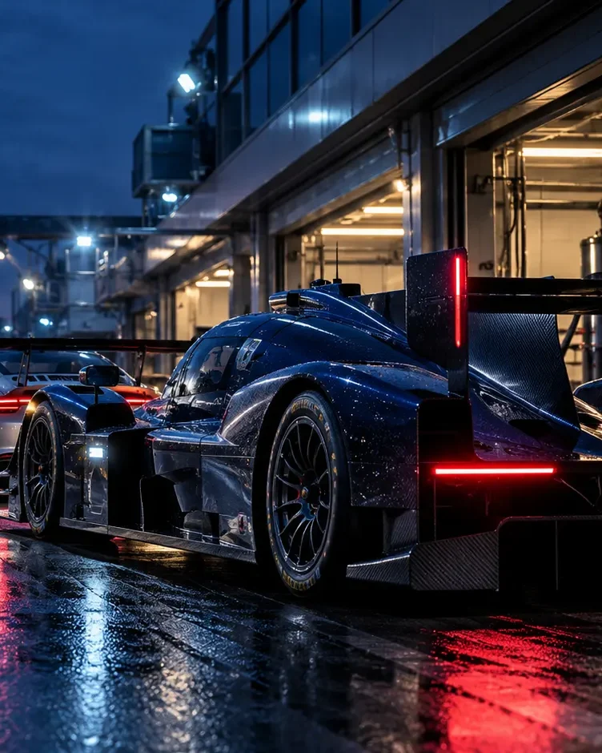
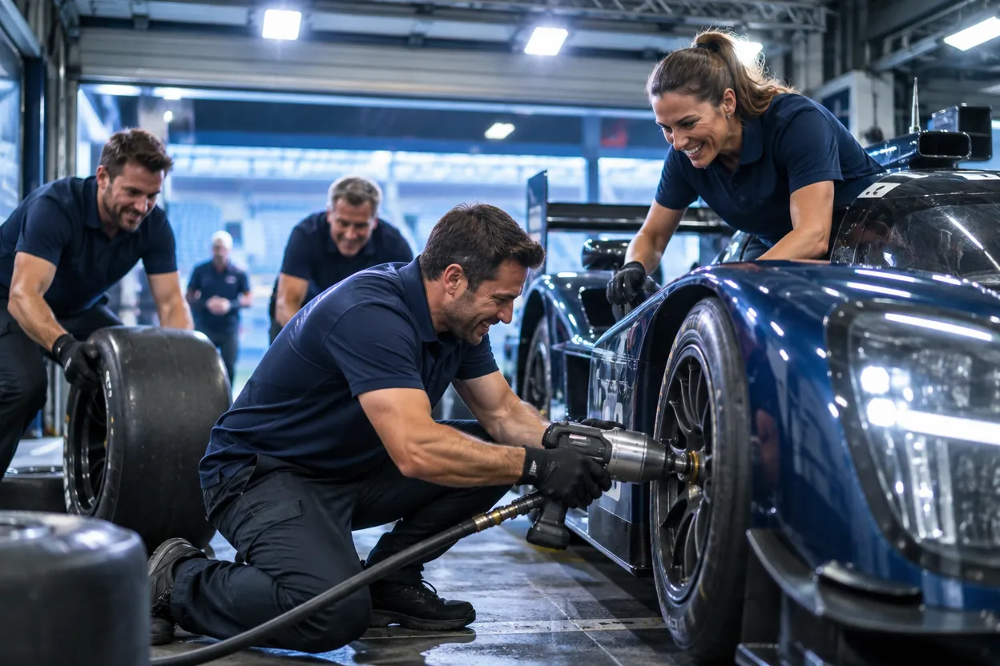
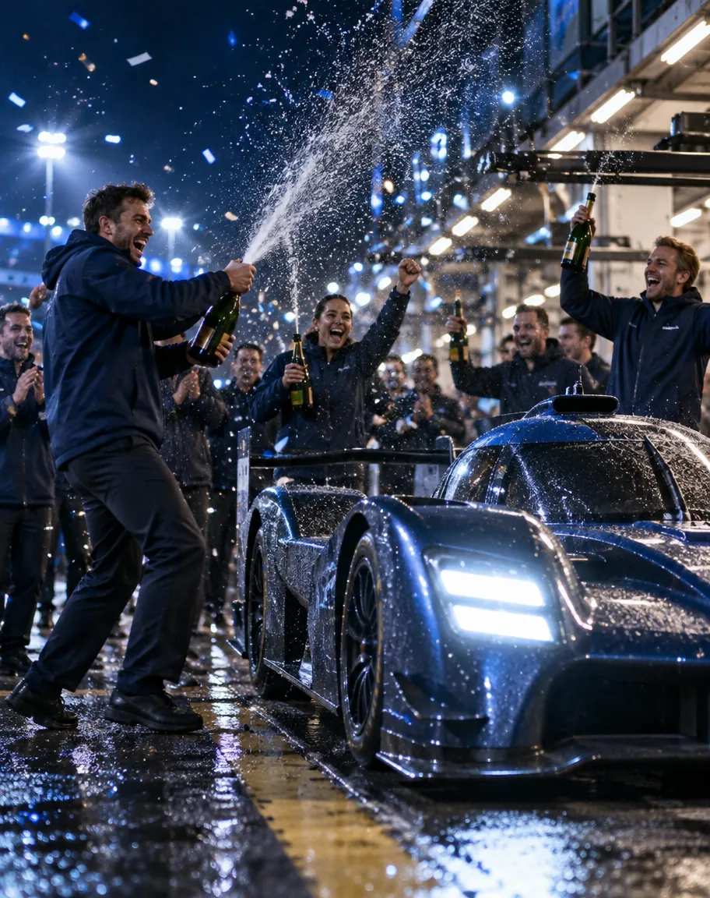
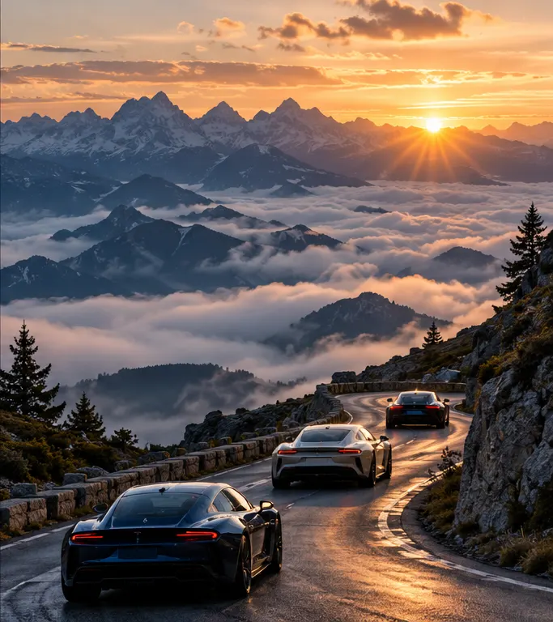
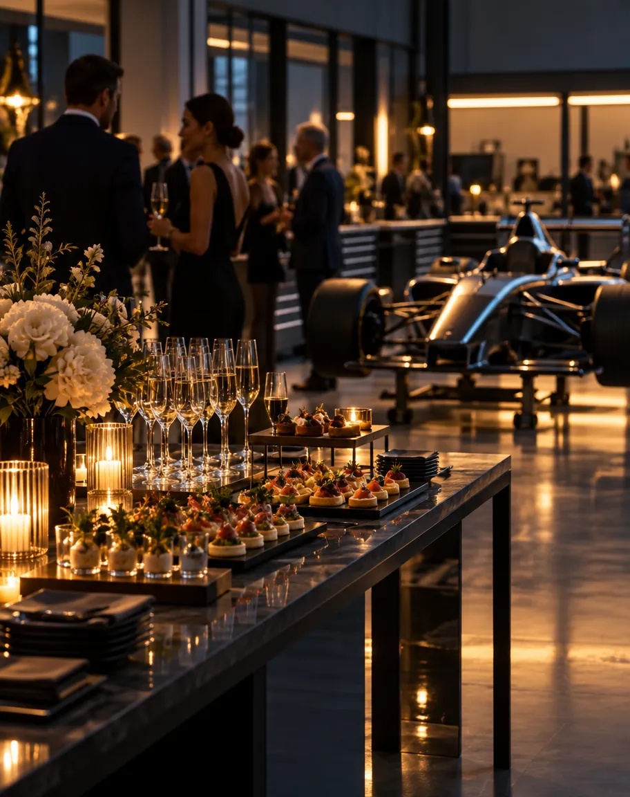
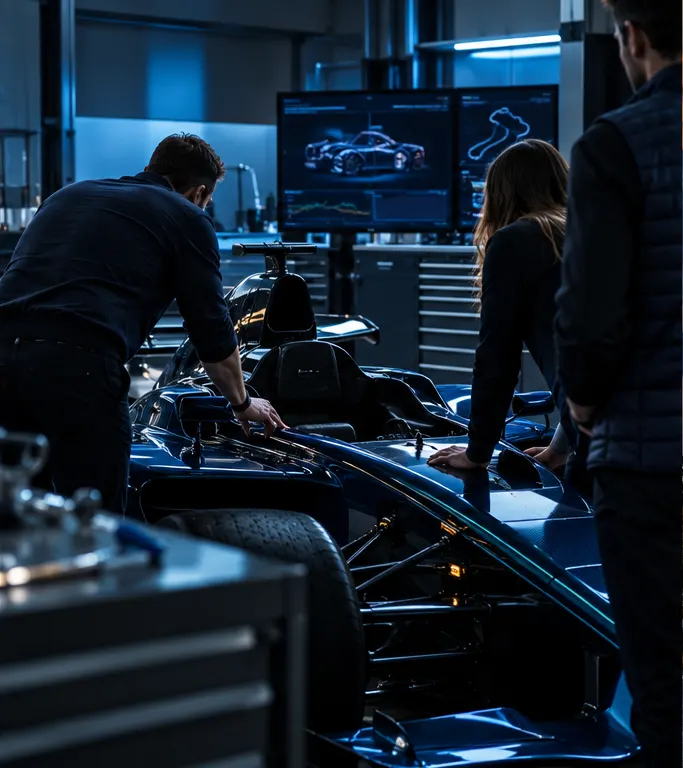
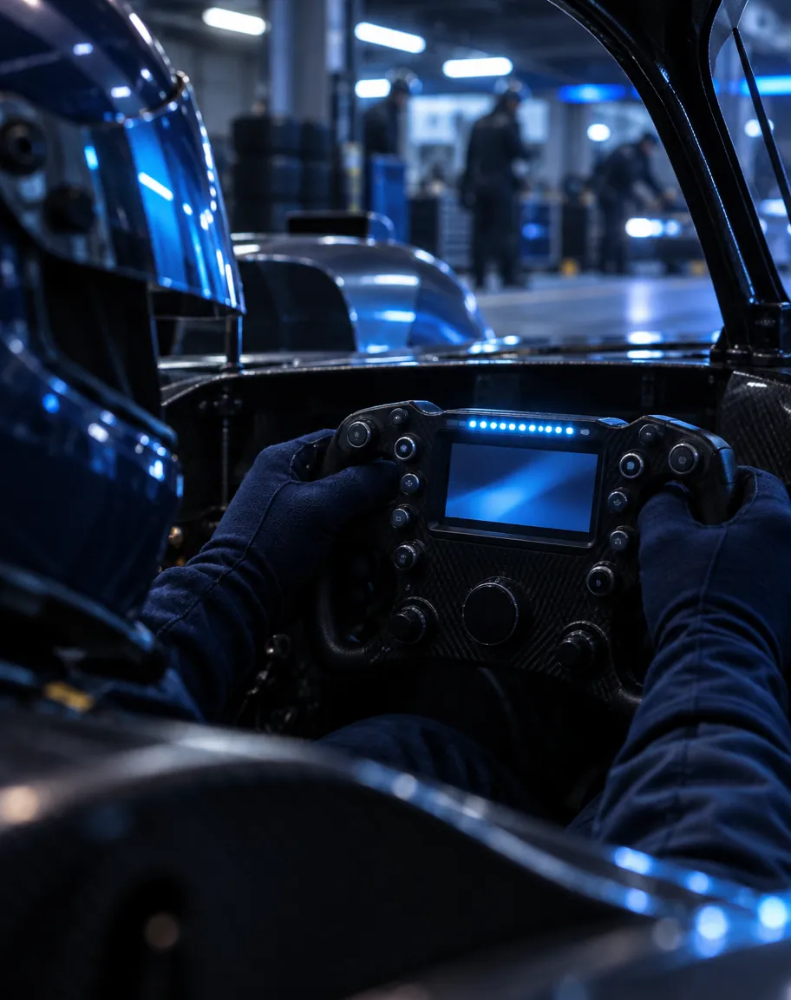

Compétition01
Racing
Compétition & endurance
Team management, mécanique et ingénierie pour que le pilote se concentre sur le pilotage, du débutant au pilote confirmé.
Compétition automobile, trackdays et préparation de véhicules. Plus de 20 ans d'expérience en endurance internationale pour vous aider à prendre la bonne trajectoire.
/ 01 — Histoire & expertise
Menée par Julien et Claude Schell, Pegasus Racing accompagne depuis plus de 20 ans pilotes amateurs et confirmés, et s'est imposée comme une référence en endurance.
Installée en Alsace, à Geispolsheim, la structure réunit team de compétition et atelier mécanique. De l'initiation au perfectionnement, chaque projet reçoit une offre sur mesure.

Préparation & stratégie de course
Pilotes amateurs & confirmés

Titres européens
La gestion du trafic, l'usure des gommes et la régularité au millième : l'essence même de l'endurance.
/ 02 — Nos programmes
Du pilotage en compétition aux journées circuit et aux événements, trois façons de vivre le sport automobile avec une écurie.

Compétition & endurance
Team management, mécanique et ingénierie pour que le pilote se concentre sur le pilotage, du débutant au pilote confirmé.

Journées circuit encadrées
Rouler sur circuit avec le soutien d'une écurie : préparation du véhicule, assistance sur place et conseils de pilotage.

Expériences & séminaires
Baptêmes, rencontres entre passionnés, séminaires et roadtrips : des événements automobiles conçus avec l'équipe.
En endurance, la course se prépare bien avant le drapeau vert. La même rigueur s'applique à chaque voiture qui passe par l'atelier de Geispolsheim.
Organisation du week-end de course pour que le pilote reste concentré sur sa piste.
Mise au point châssis sur mesure et analyse des performances avec le pilote.
Préparation spécifique, fiabilisation, inspections et contrôles des véhicules.
Une connaissance de la plupart des circuits de France et d'Europe.

Illustration d'interface : préparation et contrôle de chaque véhicule avant la piste.
/ 04 — Immersion
Instantanés de course, travail minutieux au box et adrénaline partagée entre pilotes et mécaniciens.
Ravitaillement & gestion des pneumatiques

Le focus absolu avant le relais
Commandes & écran de bord
Préparation & mise au point châssis
Débriefing & échanges
Visuels d'intention générés pour cette preview : ils ne documentent pas des courses réelles de Pegasus Racing.
Quand la nuit tombe sur la ligne droite des Hunaudières, seule compte la symbiose entre la mécanique et l'instinct du pilote.
Saison complète de compétition, journée sur circuit ou immersion pour votre entreprise : parlons de vos objectifs.